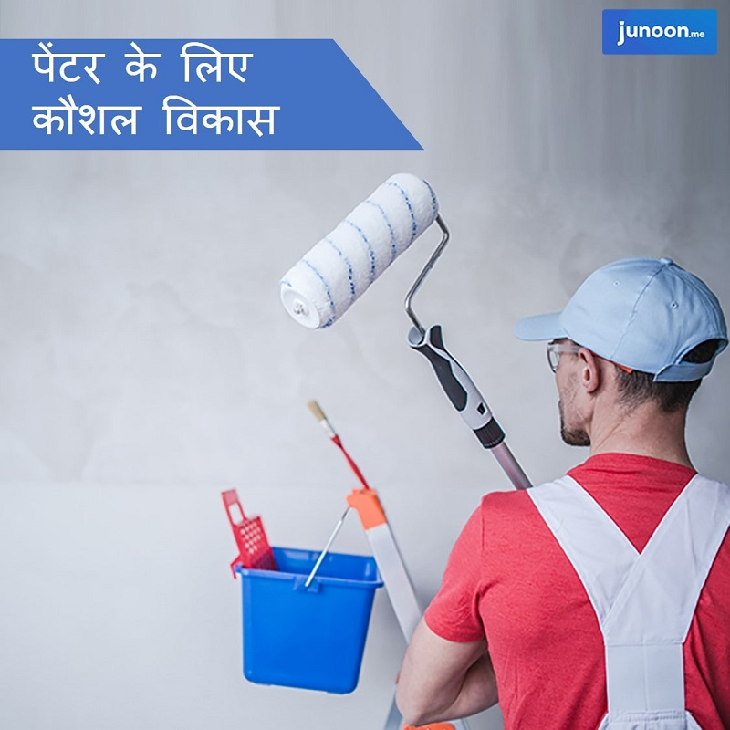

जॉब मार्केट में पेंटर्स की भारी मांग है। रियल एस्टेट सेक्टर से लेकर ऑटोमोबाइल तक, एक पेंटर की नौकरियां आवश्यक हो गई हैं। एक अच्छी पेंट जॉब और एक खराब पेंट जॉब कार, फ्रिज और घर जैसे उत्पाद के दृष्टिकोण में बहुत बड़ा अंतर लाती है। एक चित्रकार को काम पर रखना कई क्षेत्रों के लिए आवश्यक है लेकिन एक पेशेवर चित्रकार प्राप्त करना नियोक्तसओं के लिए किसी चुनौती से कम नहीं है। यह जहां चित्रकला प्रशिक्षण चित्रकारों के लिए उपयोगी हो जाता है। सही प्रशिक्षण और ज्ञान एक चित्रकार को अत्यधिक मांग वाला पेशेवर बनाते हैं।
पेन्टर के लिए कौशल विकास क्या है?

वर्तमान कॉरपोरेट परिदृश्य में, ब्लू-कॉलर श्रमिकों को अपनी नौकरियों में व्यावसायिकता के उच्चतम स्तर को दिखाने की आवश्यकता होती है, जिसके लिए सफल पेशेवर बनने के लिए बेसिक स्किल के साथ-साथ उनके पास साॅफ्ट स्किल होना चाहिए। बेसिक स्किल के बिना, कोई भी पेन्टर एक सक्षम पेन्टर नहीं बन सकता है। निम्नलिखित कुछ बेसिक स्किल्स हैं जो प्रत्येक पेन्टर के पास होने चाहिए:
- सौंदर्य बोध
- शारीरिक क्षमता
- डिटेल्स पर ध्यान
- पेंट्स का ज्ञान
- सहयोग
- पेंट कार्य का ज्ञान
- पेंट मिक्सिंग
- परियोजनाओं की योजना बनाना
- सहायकों को हायर करना
- परचेजिंग सप्लाइज
यह स्किल्स आपको एक अच्छा या विशेषज्ञ पेन्टर बना सकते हैं। यही पेन्टर्स ने पेन्टिंग कोर्सेज में सीखा है। इन कोर्सेज को बाजार की मौजूदा जरूरतों को पूरा करने के लिए डिजाइन किया गया है जिसके बिना यह विश्वसनीयता बढ़ाने या कॉर्पोरेट क्षेत्र के अवसरों को समझने के लिए वास्तव में कठिन है। लेकिन कुछ अन्य साॅफ्ट स्किल हैं जो नियोक्ता एक अच्छे पेन्टर में देखना चाहते हैं। स्थापित क्षेत्र में नौकरी पाने की संभावना बढ़ाने के लिए, इन बेसिक स्किल के साथ-साथ कुछ आवश्यक साॅफ्ट और कोर स्किल्स विकसित करना अनिवार्य है।
पेंटिंग क्लासेज में ऑनलाइन क्या अतिरिक्त स्किल डेवलप किए जाते हैं?
एक अच्छी तरह से डिजाइन किए गए पेंटिंग कोर्स का लक्ष्य विभिन्न आवश्यक साॅफ्ट स्किल विकसित करने में रहता है जो एक सामान्य चित्रकार को मास्टर पेंटर में बदल सकता है जो किसी भी चुनौती को स्वीकार करने में सक्षम है। आइए देखते हैं कि वे कौनसी साॅफ्ट स्किल्स हैं जो आज के नियोक्ता पेन्टर्स मंे देखना चाहते हैं:
प्राथमिकता – प्राथमिकता के अनुसार नौकरियों को सुव्यवस्थित किया जाता है। कुछ नौकरियों पर तत्काल ध्यान देने की आवश्यकता है जबकि कुछ को बाद में पूरा किया जा सकता है।
समस्या-समाधान – समस्याएं किसी भी प्रोजेक्ट पूर्ण एवं आंशिक हिस्सा हैं। एक पेन्टर को मूल मुद्दों को समझना चाहिए और समस्या को हल करने के लिए उचित कदम उठाने चाहिए। पेन्टिंग स्किल डेवलपमेंट क्लासेज में पेन्टर्स को सिखाया जाता है कि इस डोमेन में बहुत मजबूत कैसे बनें।
निर्णय लेने की क्षमता – यह कर्मियों के लिए आवश्यक है, चाहे वे किस स्थिति में काम करें, अपने दम पर निर्णय लें, कम से कम उनके दायरे में नौकरियों के लिए। निर्णय लेने की क्षमता एक ऐसी चीज है जो एक प्राॅफेशनल पेन्टर्स को बाकियों से अलग करती है। कई अवसरों पर, यह क्षमता टीम के सदस्यों और सहायकों को भर्ती करने, सामान खरीदने, ग्राहकों को सलाह देने आदि जैसे उपयोगी हो जाती है।
स्वतंत्र रूप से काम करना – यह एक महत्वपूर्ण सॉफ्ट स्किल है जो प्राॅबलम साॅल्विंग स्किल और डिसीजन मेकिंग स्किल जैसे कई अन्य सॉफ्ट स्किल को पूरक करता है। नौकरी का ज्ञान अब पर्याप्त है, स्वतंत्र रूप से सोचने और काम करने की क्षमता नियोक्ता को एक प्रोजेक्ट को अधिक कुशलता से मैनेज करने में मदद करती है।
आॅनलाइन पेंटिंग क्लासेज का लक्ष्य अनुभवी पेन्टर्स जिन्हंे इस पेशे में उत्कृष्ट बनने की रूचि है उनके भीतर श्रेष्ठ साॅफ्ट स्किल विकसित करना है।
ऑनलाइन पेंटिंग प्रशिक्षण कैसे आपको नौकरी पाने में मदद कर सकता है?
ऑनलाइन पेंटिंग क्लासेज संगठित क्षेत्र की वर्तमान मांग और पेन्टर के लिए स्किल डेवलपमेन्ट को पूरा करने के लिए बनाई गई हैं। पेन्टर्स और अन्य ब्लू-कॉलर श्रमिकों के लिए ऑनलाइन क्लासेज में सभी आवश्यक पाठ शामिल हैं जो स्किल के विभिन्न पहलुओं का व्यापक ज्ञान विकसित करने में मदद करते हैं। आप इन क्लासेज को घर से कर सकते हैं। जूनून पेन्टिंग के लिए ऑनलाइन क्लासेज को आगे बढ़ाने का एक भरोसेमंद स्रोत है। वे प्राॅफेशनल पेन्टर्स को सही स्रोत प्रदान करने के लिए एक उपयुक्त नौकरी खोजने में भी मदद करते हैं।